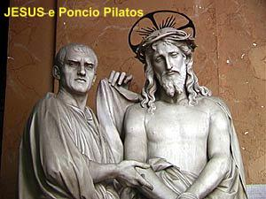

A Via Sacra é uma oração que nos lembra o caminho da dor e do sofrimento de JESUS, no percurso de sua Divina missão Redentora, quando de modo perfeito e heróico, demonstrou uma profunda obediência ao PAI ETERNO e um infinito Amor à humanidade de todas as gerações.
Normalmente é rezada as Quartas-feiras e Sextas-feiras no período da Quaresma. Todavia, por sua importância e valor espiritual, deveria ser lembrada nos demais meses do ano, por todos aqueles que se sentirem sensibilizados à amenizar as dores do Redentor e quiserem se irmanar aos sofrimentos de JESUS, penitenciando-se de suas próprias culpas e das transgressões da humanidade.
Rezar a Via Sacra é reviver na mente e no coração a grandeza do Amor de DEUS, que para Salvar e Redimir a humanidade de todas as gerações, entregou o seu Divino FILHO em holocausto, como Vítima Perfeita para lavar os pecados de todos nós!


= INDICE =
 = 1ª, 2ª e 3ª ESTAÇÕES DA VIA SACRA
= 1ª, 2ª e 3ª ESTAÇÕES DA VIA SACRA
 = 13ª, 14ª e 15ª ESTAÇÕES DA VIA SACRA
= 13ª, 14ª e 15ª ESTAÇÕES DA VIA SACRA